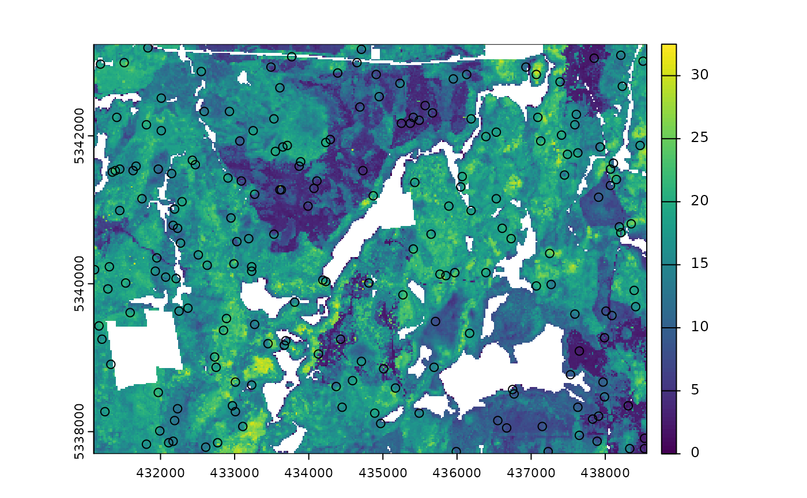

Conditioned Latin Hypercube Sampling using clhs functionality.
Usage
sample_clhs(
mraster,
nSamp,
iter = 10000,
cost = NULL,
existing = NULL,
access = NULL,
buff_inner = NULL,
buff_outer = NULL,
plot = FALSE,
details = FALSE,
filename = NULL,
overwrite = FALSE,
...
)Arguments
- mraster
spatRaster. ALS metrics raster.
- nSamp
Numeric. Number of desired samples.
- iter
Numeric. Value giving the number of iterations within the Metropolis-Hastings process.
- cost
Numeric/Character. Index or name of covariate within
mrasterto be used to constrain cLHS sampling. If default (NULL), a cost constraint is not used.- existing
sf 'POINT'. Existing plot network.
- access
sf 'LINESTRING' or 'MULTILINESTRING'. Access network.
- buff_inner
Numeric. Inner buffer boundary specifying distance from access where plots cannot be sampled.
- buff_outer
Numeric. Outer buffer boundary specifying distance from access where plots can be sampled.
- plot
Logical. Plots output strata raster with samples.
- details
Logical. If
FALSE(default) output is only stratification raster. IfTRUEreturn a list where$detailsis additional stratification information and$rasteris the output stratification spatRaster.- filename
Character. Path to write output samples.
- overwrite
Logical. Choice to overwrite existing
filenameif it exists.- ...
Additional arguments for clhs sampling. See
clhs.
References
Minasny, B. and McBratney, A.B. 2006. A conditioned Latin hypercube method for sampling in the presence of ancillary information. Computers and Geosciences, 32:1378-1388.
Minasny, B. and A. B. McBratney, A.B.. 2010. Conditioned Latin Hypercube Sampling for Calibrating Soil Sensor Data to Soil Properties. In: Proximal Soil Sensing, Progress in Soil Science, pages 111-119.
Roudier, P., Beaudette, D.E. and Hewitt, A.E. 2012. A conditioned Latin hypercube sampling algorithm incorporating operational constraints. In: Digital Soil Assessments and Beyond. Proceedings of the 5th Global Workshop on Digital Soil Mapping, Sydney, Australia.
See also
Other sample functions:
sample_ahels(),
sample_balanced(),
sample_existing(),
sample_nc(),
sample_srs(),
sample_strat(),
sample_systematic()
Examples
#--- Load raster and existing plots---#
r <- system.file("extdata", "mraster.tif", package = "sgsR")
mr <- terra::rast(r)
e <- system.file("extdata", "existing.shp", package = "sgsR")
e <- sf::st_read(e)
#> Reading layer `existing' from data source
#> `/home/runner/work/_temp/Library/sgsR/extdata/existing.shp'
#> using driver `ESRI Shapefile'
#> Simple feature collection with 200 features and 1 field
#> Geometry type: POINT
#> Dimension: XY
#> Bounding box: xmin: 431110 ymin: 5337710 xmax: 438530 ymax: 5343230
#> Projected CRS: UTM_Zone_17_Northern_Hemisphere
a <- system.file("extdata", "access.shp", package = "sgsR")
ac <- sf::st_read(a)
#> Reading layer `access' from data source
#> `/home/runner/work/_temp/Library/sgsR/extdata/access.shp'
#> using driver `ESRI Shapefile'
#> Simple feature collection with 167 features and 2 fields
#> Geometry type: MULTILINESTRING
#> Dimension: XY
#> Bounding box: xmin: 431100 ymin: 5337700 xmax: 438560 ymax: 5343240
#> Projected CRS: UTM_Zone_17_Northern_Hemisphere
sample_clhs(
mraster = mr,
nSamp = 200,
plot = TRUE,
iter = 100
)

#> Simple feature collection with 200 features and 4 fields
#> Geometry type: POINT
#> Dimension: XY
#> Bounding box: xmin: 431110 ymin: 5337710 xmax: 438550 ymax: 5343190
#> CRS: +proj=utm +zone=17 +ellps=GRS80 +towgs84=0,0,0,0,0,0,0 +units=m +no_defs
#> First 10 features:
#> zq90 pzabove2 zsd type geometry
#> 80091 19.00 89.3 5.16 new POINT (431970 5338310)
#> 87045 15.10 88.7 2.90 new POINT (434530 5337930)
#> 72768 19.60 89.4 5.78 new POINT (432810 5338830)
#> 24104 18.00 72.4 4.19 new POINT (432530 5341830)
#> 84701 19.10 87.6 6.13 new POINT (431350 5338050)
#> 20079 18.90 97.5 4.25 new POINT (437450 5342070)
#> 24737 16.90 96.8 3.18 new POINT (431530 5341790)
#> 17858 11.60 92.6 2.71 new POINT (436910 5342190)
#> 36243 5.47 54.0 1.45 new POINT (433950 5341130)
#> 42808 19.40 91.8 4.26 new POINT (432670 5340730)
sample_clhs(
mraster = mr,
nSamp = 400,
existing = e,
iter = 250,
details = TRUE
)
#> $clhs
#> [1] 49761 54038 50747 31649 25214 60280 84920 63479 63776 81885 15008
#> [12] 10154 83126 7079 28220 55069 7009 67900 23320 9680 69165 46702
#> [23] 77985 3687 24122 75364 42783 50503 67181 80458 47298 74626 30439
#> [34] 85175 43432 87036 32327 59335 82065 56243 17223 39925 66742 66359
#> [45] 91001 28464 77959 78665 11239 5260 57312 1526 66955 86106 6431
#> [56] 8831 14928 7569 67225 11544 54602 62913 35635 20916 30998 18524
#> [67] 72653 88268 84813 49537 43765 6928 30569 15156 47906 44823 1782
#> [78] 36552 53991 7787 46372 89985 61920 29607 76977 28578 79699 63980
#> [89] 53384 12858 58295 40899 58819 18489 37094 1406 40775 46585 20344
#> [100] 73335 83673 47782 2697 40153 75985 16153 64839 59865 50772 41886
#> [111] 74500 4924 20689 56 84212 44068 54938 22991 11339 56931 17988
#> [122] 70929 80859 82819 4540 5666 84385 75148 65933 90016 38085 59669
#> [133] 35165 1172 24559 52771 72987 82701 43213 87628 42159 50675 5807
#> [144] 1945 4288 87894 29006 13591 74518 41709 28045 60888 89704 73746
#> [155] 78933 77949 32766 40514 69919 8082 72007 40723 27322 90622 59067
#> [166] 19045 23119 70907 67669 78328 74613 71015 69392 61259 42471 86383
#> [177] 81516 16116 47717 23841 8574 11519 25354 3141 25679 19142 49242
#> [188] 6148 1361 72013 60521 63710 11248 43327 31171 48918 30937 40681
#> [199] 2368 84686 1 2 3 4 5 6 7 8 9
#> [210] 10 11 12 13 14 15 16 17 18 19 20
#> [221] 21 22 23 24 25 26 27 28 29 30 31
#> [232] 32 33 34 35 36 37 38 39 40 41 42
#> [243] 43 44 45 46 47 48 49 50 51 52 53
#> [254] 54 55 56 57 58 59 60 61 62 63 64
#> [265] 65 66 67 68 69 70 71 72 73 74 75
#> [276] 76 77 78 79 80 81 82 83 84 85 86
#> [287] 87 88 89 90 91 92 93 94 95 96 97
#> [298] 98 99 100 101 102 103 104 105 106 107 108
#> [309] 109 110 111 112 113 114 115 116 117 118 119
#> [320] 120 121 122 123 124 125 126 127 128 129 130
#> [331] 131 132 133 134 135 136 137 138 139 140 141
#> [342] 142 143 144 145 146 147 148 149 150 151 152
#> [353] 153 154 155 156 157 158 159 160 161 162 163
#> [364] 164 165 166 167 168 169 170 171 172 173 174
#> [375] 175 176 177 178 179 180 181 182 183 184 185
#> [386] 186 187 188 189 190 191 192 193 194 195 196
#> [397] 197 198 199 200
#>
#> $samples
#> Simple feature collection with 400 features and 5 fields
#> Geometry type: POINT
#> Dimension: XY
#> Bounding box: xmin: 431110 ymin: 5337710 xmax: 438530 ymax: 5343230
#> CRS: +proj=utm +zone=17 +ellps=GRS80 +towgs84=0,0,0,0,0,0,0 +units=m +no_defs
#> First 10 features:
#> type zq90 pzabove2 zsd FID geometry
#> 1 new 19.20 94.5 3.19 NA POINT (432670 5340330)
#> 2 new 17.70 65.6 5.30 NA POINT (436110 5340090)
#> 3 new 18.50 95.1 3.26 NA POINT (431630 5340270)
#> 4 new 21.20 82.5 5.98 NA POINT (434970 5341410)
#> 5 new 23.70 94.7 4.84 NA POINT (437410 5341790)
#> 6 new 16.20 60.6 4.39 NA POINT (437470 5339710)
#> 7 new 18.20 89.7 4.67 NA POINT (431730 5338050)
#> 8 new 15.60 93.3 3.08 NA POINT (433590 5339510)
#> 9 new 21.00 85.8 5.69 NA POINT (432870 5339490)
#> 10 new 7.58 81.5 1.75 NA POINT (436790 5338230)
#>